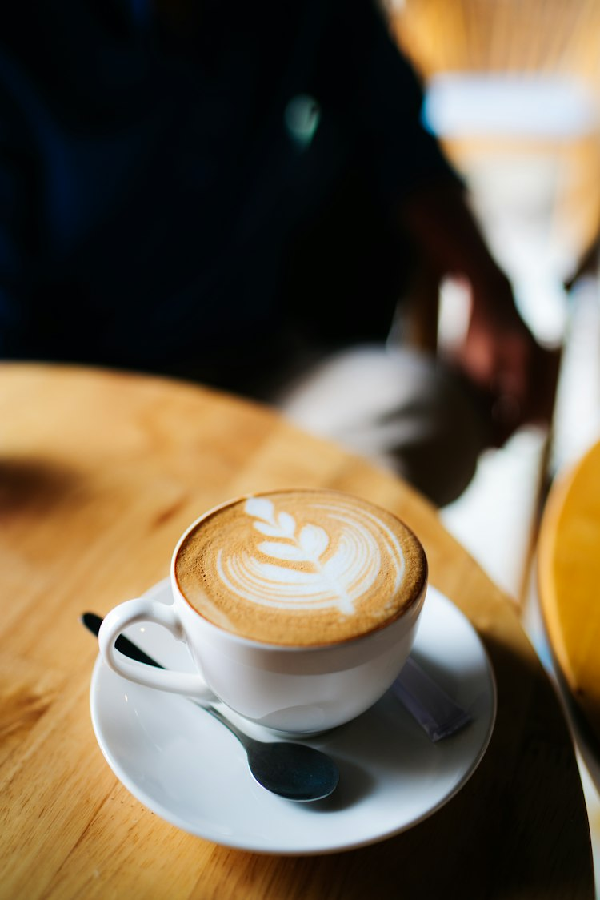
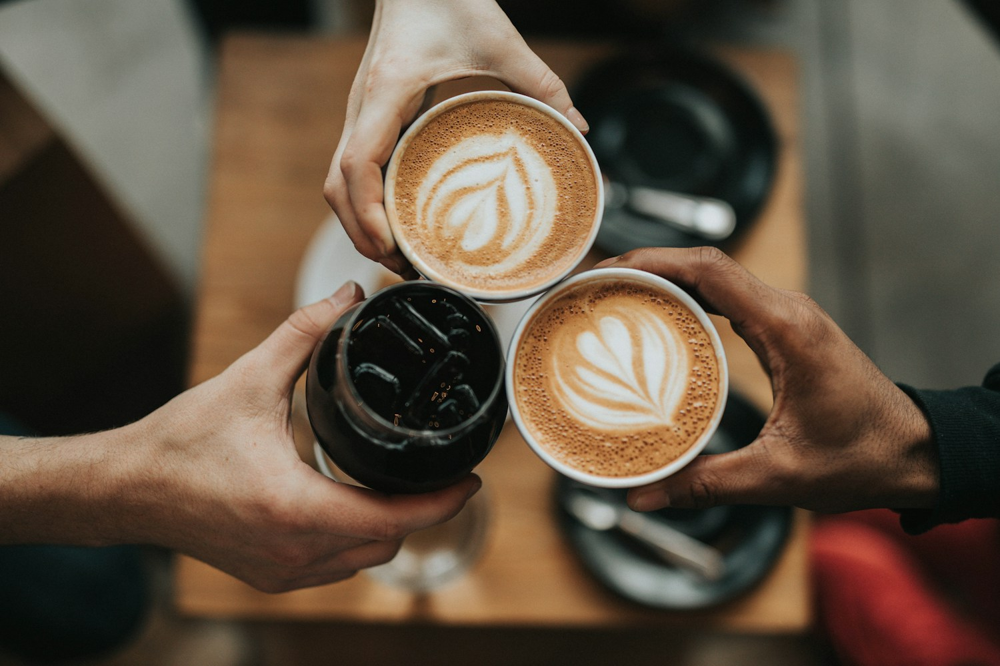
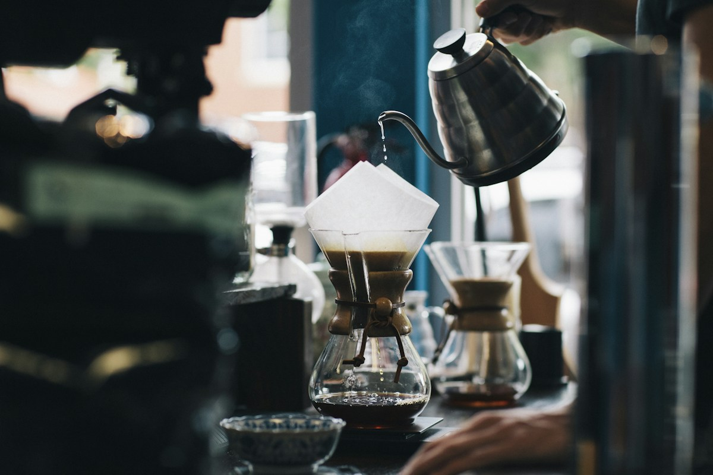

UM CLÁSSICO DA CASACappuccino da Miga
R$ 16Espresso, leite cremoso e uma pausa merecida.
Entre um gole e uma boa conversa, a vida fica mais gostosa. Sinta-se em casa — o café já está passando.


feito de encontros.A Casa Miga é um convite para desacelerar. Um lugar onde o aroma do café encontra o cheirinho de bolo e cada detalhe abre espaço para um bom momento.
Para vir com quem você gosta, trazer um livro ou simplesmente aproveitar a própria companhia.
Bolos, doces e carinho para a sua comemoração.
Converse com a gente e escolha a sua encomenda.